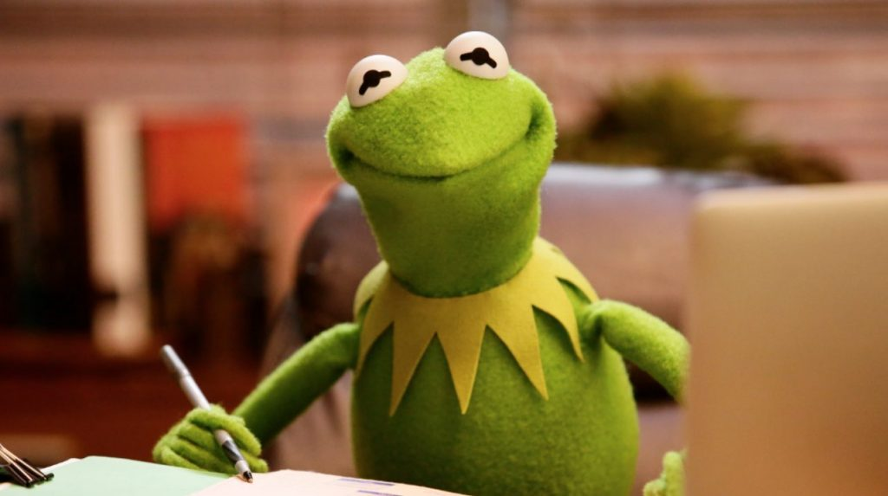

Kiss A Frog
Sources

Sources
AmphibiaWeb. University of California, Berkeley, CA, USA. Retrieved 2 Jun 2022, from
https://amphibiaweb.org
San Jose Cochran frog. National Geographic Society. Retrieved June 2, 2022, from
https://www.nationalgeographic.org/projects/photo-ark/animal/cochranella-euknemos/
Golden Mantella frog. Smithsonian's National Zoo. (2020, January 14). Retrieved June 2, 2022, from
https://nationalzoo.si.edu/animals/golden-mantella-frog
Purple frog. WWF. Retrieved June 2, 2022, from
https://www.wwfindia.org/about_wwf/priority_species/lesser_known_species/purple_frog/
Red-eyed tree frog. Animals. Retrieved June 2, 2022, from
https://kids.nationalgeographic.com/animals/amphibians/facts/red-eyed-tree-frog
Yellow-banded poison dart frog. Rosamond Gifford Zoo. (n.d.). Retrieved June 2, 2022, from
https://www.rosamondgiffordzoo.org/experience/animals/amphibians/new-anal/